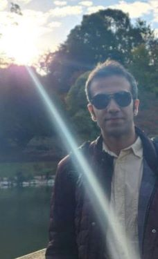

Robust Filtering for Multi-Object Tracking Against Stealthy Measurement-Oriented Adversarial Attacks
Multi-object tracking
Robust estimation under clutter, missed detections, and false measurements.

PhD researcher working on signal processing, deep learning, multi-object tracking, Bayesian filtering, and adversarial robustness.
Research profile.
I study how intelligent systems track objects when data is uncertain, incomplete, or adversarial.
My work combines signal processing, Bayesian inference, random finite set theory, deep learning, and robust multi-object tracking.
Current themes.
Robust estimation under clutter, missed detections, and false measurements.
Efficient and robust diffusion models for trajectory and state estimation.
Ghost attacks, false data injection, replay attacks, and denial-of-service.
RFS-based reasoning for uncertainty in multi-object systems.
Latest selected works.
Robust Filtering for Multi-Object Tracking Against Stealthy Measurement-Oriented Adversarial Attacks
Real-Time Intrusion Detection of Ghost Attacks in Distributed Multi-Object Tracking Without Offline Pre-Training
Evaluating Deep Learning Data Imputation for Subway Indoor Air Quality
Academic background.
RMIT University, Melbourne, Australia
Kyung Hee University, South Korea
Amirkabir University of Technology, Iran
Outside research.
I enjoy learning the violin as a personal passion, not professionally. I am also interested in the creative process behind music composition.
I also love swimming and recently completed a Water Confidence certificate at Melbourne City Baths.